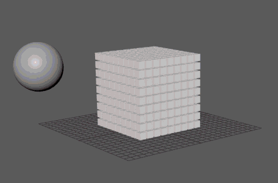

（通过使用
Bullet）将动力学作用力应用于 MASH 网络，包括（但不限于）重力、摩擦力和碰撞。在播放期间，您可以通过调整模拟属性与模拟实时交互。
注： 若要与 MASH 网络之外的对象碰撞，必须将这些对象添加到
BulletSolver 节点的
“外部碰撞对象”(External Colliders)列表中。
注： 请避免将已设置动画的对象（例如，变形）添加到动态 MASH 网络。MASH 仅将其开始位置/形状视为碰撞形状，这意味着第 1 帧之后的碰撞将显示不正确。
MASH 对象
-
碰撞形状(Collision Shape)
- 确定每个对象周围的碰撞框的形状。选项包括：
- 自动(Automatic)：根据每个点自动从“长方体”(Box)、“凸面壳线”(Convex hull)或“凹面网格”(Concave mesh)中选择最合适的碰撞形状。
- 长方体(Box)：简单的立方体。提供最佳性能。
- 球体(Sphere)：包含球中的对象。性能低于“长方体”(box)。
- 胶囊(Capsule)：包含圆头圆柱体中的对象。
- 凸面壳线(Convex hull)：通过围绕对象构建边的壳线包含相应对象。可以大致近似圆化形状。
- 圆柱体(Cylinder)：包含平头圆柱体中的对象。
- 网格(Mesh)：包含实际几何体的网格副本中的对象。这是最准确的碰撞形状，但执行较慢。
-
自动适配(Auto fit)
- 自动根据每个对象缩放碰撞形状。
-
碰撞形状比例(Collision Shape Scale)
- 可用于增大或减小“碰撞形状”(Collision Shape)的大小。放大可能会导致对象在其几何体相交之前发生碰撞，而缩小可能会导致对象在碰撞注册之前发生穿透。
-
碰撞形状长度(Collision Shape Length)
- 可用于在“碰撞形状”(Collision Shape)设置为“胶囊”(capsule)或“圆柱体”(cylinder)时增加或减少圆柱体长度。
物理特性
-
摩擦力(Friction)
- 设置对象的曲面阻力。
-
滚动摩擦(Rolling Friction)
- 设置滚动时对象的阻力。
-
阻尼(Damping)
- 抑制对象的线性速度。增大该值可减慢运动。
-
滚动阻尼(Rolling Damping)
- 抑制对象的滚动摩擦。增大该值可在更短的时间内使对象停止滚动。
-
反弹(Bounce)
- 设置对象恢复到其原始状态时的速度。
-
使用质量密度(Use Mass as Density)
- 计算每个 MASH 点的体积，然后将“质量”(Mass)属性转化为“密度”(Density)值（单位体积的质量，或质量/体积）。如果要使较大的对象具有更高的质量，则启用此选项。
-
质量(Mass)
- 为模拟计算设置每个对象的质量。
-
碰撞抖动(Collision Jitter)
- 在对象碰撞时随机添加冲量，用于模拟对象的小瑕疵可能对碰撞体产生的效果。
速度
-
最大平移(Maximum Translational)
- 允许对象每秒移动的最大单位。
-
最大旋转(Maximum Rotational)
- 允许对象每秒旋转的最大单位。
-
初始平移(Initial Translational)
- 设置对象在模拟开始状态下的初始速度。
-
初始旋转(Initial Rotational)
- 设置对象在模拟开始状态下的初始旋转速度（自旋）。
MASH 偏移
-
位置强度(Position Strength)
- 影响模拟，使对象位置更紧密地粘附到原始 MASH 网络。
-
旋转强度(Rotational Strength)
- 影响模拟，使对象旋转更紧密地粘附到原始 MASH 网络。
睡眠
以下选项确定动力学 MASH 对象何时处于活动或非活动状态。对于在停止移动的对象上消除不必要的计算或防止这些对象原地抖动，这一点非常重要。
-
开始时睡眠(Initially Sleeping)
- 以非活动状态启动对象，直到这些对象与另一对象碰撞为止。有关设置碰撞的详细信息，请参见 BulletSolver 节点的“外部碰撞对象”(External Colliders)。
-
位置速度阈值(Position Velocity Threshold)
- 确定对象移动变为非活动状态时的位置速度。
-
旋转速度阈值(Rotational Velocity Threshold)
- 确定对象自旋变为非活动状态时的旋转速度。
-
初始状态(Initial State)
- 单击“+”按钮，将当前帧设置为模拟的开始状态。这会将初始状态节点添加到 MASH 网络。可以通过按“刷新”(Refresh)按钮来刷新用作“初始状态”(Initial State)的帧，也可以通过右侧按钮切换“初始状态”(Initial State)。
每点属性
-
每点调整(Per Point Adjustments)
- 可用于通过 MASH 通道随机化器节点逐点向特定的属性通道添加差异。在该字段的空白部分上单击鼠标右键可创建新的随机化器，或者在现有条目上单击鼠标右键并选择“断开连接”(Break Connection)可将其移除。
约束
可用于通过 MASH 约束节点以各种方式使点彼此约束。在该字段的空白部分上单击鼠标右键可创建新的随机化器，或者在现有条目上单击鼠标右键并选择“断开连接”(Break Connection)可将其移除。
接触
-
从碰撞发射(Emit From Collisions)
- 创建对象发生碰撞（相互碰撞和与地面碰撞）的稳定点。点位置存储在 BulletSolver 的“输出碰撞点”(Output Collision Points)属性中，且可用作其他 MASH 网络的输入点。
-
碰撞距离阈值(Collision Distance Threshold)
- 确定围绕对象注册碰撞的距离。
-
忽略不可见对象(Ignore Invisible Objects)
- 将点设置为忽略与隐藏对象的碰撞效果。
交互遮罩
这可用于自定义特定点或点范围（通过其 ID）的碰撞行为。
-
接触遮罩层(Contact Mask Layers)
- 指定启用“从碰撞发射”(Emit From Collisions)时不会生成点的层。
-
碰撞组层(Collision Group Layers)
- 指定 MASH 网络所属的层。
-
碰撞遮罩层(Collision Mask Layers)
- 指定可以与 MASH 网络碰撞的层。